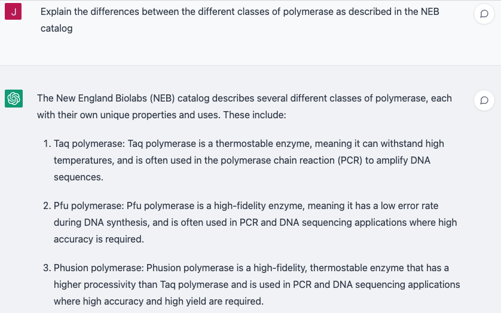

DNA Manipulation Enzymes
BioE 140L · UC Berkeley
YouTube playlist:
youtube.com/playlist — DNA Manipulation Enzymes
BioE 140L · UC Berkeley
YouTube playlist:
youtube.com/playlist — DNA Manipulation Enzymes
openwetware.org/wiki/Synthetic_Biology_Trails — lectures on experimental design
A list of the eleven Synthetic Biology Trails YouTube playlists, from DNA Manipulation Enzymes through DNA Fabrication, Genome Manipulation, Chassis, Parts, Practices, Whole-Cell Analysis, In vitro Assays, Directed Evolution, Combinatorial Libraries and Automation.Are you familiar with the content of the NEB catalog?
